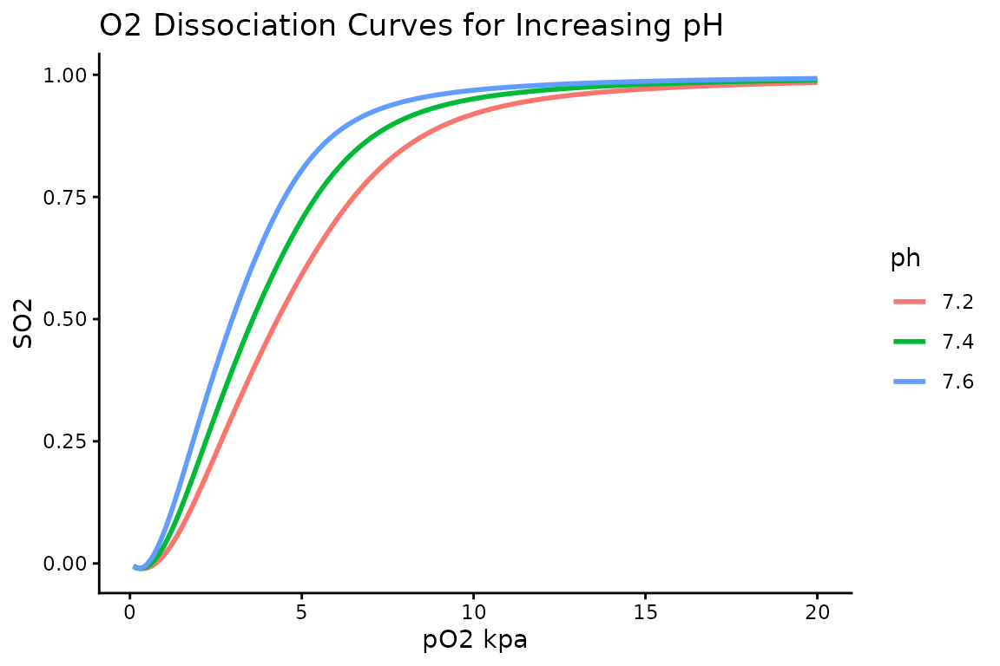

Calculating SO2 from pO2
B Akenzua-Sanderson
2026-05-27
po2-to-so2.RmdThe relationship of haemoglobin oxygen saturation of haemoglobin to the partial pressure of oxygen in blood is described by the oxygen dissociation curve. This sigmoiodal curve describes haemoglobin’s affinity for oxygen, characterising how it acquires and releases oxygen. The shape and position of the curve is affected by several factors, pH, temperature, concentration of 2,3-BPG and
The three functions presented here are based on work of Kelman (1966). This model is inacccurate as approaches 0, but is otherwise an excellent fit to physiologically occuring values.
Theory
The mathematical model Kelman (1966) used to describe the dissociation curve takes the following form:
where:
To account for respiratory, metabolic and temperature disturbances to the oxygen affinity of haemoglobin requires that a transform be applied to the before the preceding calculation can be performed. Kelman (1966) defines the transform to as:
Implementation
kelman_std_po2_to_so2
co2ntent::kelman_std_po2_to_so2 calculates
from
in blood via the seven coefficient model described above. This function
makes no correction for acid/base disturbance, assuming pH=7.4,
temperature=37c and pCO2=40mmHg
kelman_virtual_po2
kelman_virtual_po2 calculates ‘virtual po2’, a pO2
corrected for ph, pco2 and temperature.
kelman_po2_to_so2
kelman_po2_to_so2 calculates haemoglobin oxygen
saturation from partial pressure of oxygen in blood via the method
described by (Kelman 1966). This function is a composite of the
preceding two functions, and will apply the transform from
to
and then calculate
from the result.
Examples
kelman_std_po2_to_so2
> library(co2ntent)
>
> kelman_std_po2_to_so2(po2=8)
[1] 0.9105911
>
> po2_kpa <- c(8,9,10,11,12)
> kelman_std_po2_to_so2(po2=po2_kpa)
[1] 0.9105911 0.9352465 0.9507951 0.9610931 0.9682613
>
>
> kelman_std_po2_to_so2(po2=(8 * 7.5), po2_units = "mmHg")
[1] 0.9105706kelman_po2_to_so2
> kelman_po2_to_so2(po2=8, pco2=7)
[1] 0.9064238
> kelman_po2_to_so2(po2=8, pco2=7, temperature=39, ph=7.2)
[1] 0.7924081
data.frame(po2s = seq(0.1,20,0.1)) |>
mutate(ph_7_2 = kelman_po2_to_so2(po2=po2s, ph=7.2)) |>
mutate(ph_7_4 = kelman_po2_to_so2(po2=po2s, ph=7.4)) |>
mutate(ph_7_6 = kelman_po2_to_so2(po2=po2s, ph=7.6)) |>
tidyr::gather(ph, value, -po2s) |>
ggplot() +
geom_line(aes(po2s, value, colour=ph), size = 1) +
theme_classic() +
labs(x='pO2 kpa', y='SO2', title='O2 Dissociation Curves for Increasing pH') +
scale_colour_discrete(labels=c("7.2", "7.4", "7.6"))